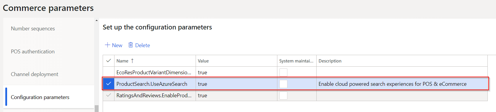

Cloud-powered search overview
This topic gives an overview of cloud-powered search in Microsoft Dynamics 365 Commerce.
Overview
Product discoverability helps guarantee that customers can quickly and easily find products by browsing categories, searching, and filtering. Retailers consider product discovery a primary tool for customer interaction across all channels.
Customers are accustomed to the nearly instantaneous response times of web search engines, sophisticated e-Commerce websites, social apps, automatic suggestions that appear as they type search terms, faceted navigation, and highlighting. If customers can't find the product that they are looking for quickly enough in one e-Commerce store, they won't hesitate to go to a different e-Commerce store.
The cloud-powered product discoverability in Dynamics 365 Commerce helps retailers continue to increase consumer retention and conversion rates across all channels, both e-Commerce channels and point of sale (POS) channels.
The Dynamics 365 Commerce search experience has improved capabilities to help retailers achieve better product discoverability. At the same time, these capabilities deliver the scalability and performance that are required for e-Commerce traffic.
Browse and search
Search relevance and performance are key factors in the omnichannel experience, because product discovery relies primarily on search functionality for information retrieval and content navigation. An effective and efficient browse and search experience helps increase conversion.
The following illustration shows an example of typical browse and search functionality.

Faceted navigation and choice summary
Faceted navigation helps customers more easily browse for content by letting them filter on refiners that are linked to terms in a term set. After a customer has selected and applied refiners, a summary of the choices is shown.
By using faceted navigation, you can configure different refiners for different terms in a term set, without having to create additional pages.
The following illustration shows an example where faceted navigation is used in a search.
Immersive autosuggest
Current autosuggest functionality just shows keywords that trigger a search for the matching keyword. Because of new enhancements in Dynamics 365 Commerce, customers can often discover links to products before they have finished typing.
Dynamics 365 Commerce also supports functionality for keyword matches in various categories. This functionality lets customers see the number of matching keywords across categories and trigger a search for a keyword in other categories.
The following illustration shows an example where immersive autosuggest is being used.
Sort
Enhanced sorting in Dynamics 365 Commerce lets customers sort, search, and browse search results, and refine them by criteria such as price, product name, and product number. Customers can also sort results based on whether a product is new, top-selling, or recently added.
Note
These cloud-powered search capabilities are available starting in version 10.0.8. Ensure that under Commerce Parameters > Configuration Parameters there is an entry for "ProductSearch.UseAzureSearch set to 'true'". 
Additional resources
Default category landing page and search results page overview